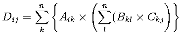

概要通常DynamicsSimulator等各種シミュレータはCORBAサーバとして使用されますが、OpenHRP3ではライブラリとしての利用も可能になっています。ここではその使用方法を説明します。 モデルの読み込みモデルの読み込みはloadBodyFromModelLoader()を使用します。これはBodyクラスへのポインタBodyPtr、モデルURLおよびコマンドライン引数を受け取り、ModelLoaderサーバを使用してモデルを読み込みます。
BodyPtr body = new Body();
if(!loadBodyFromModelLoader(body, url.c_str(), argc, argv)){
cerr << "ModelLoader: " << url << " cannot be loaded" << endl;
return 0;
}
BodyPtrはロボットの構造を表しており、以下の木構造を持ちます。 Body + Link Bodyにはモデル名などロボットの情報と関節リストが入っています。関節を取得するためには3種類の手段があります。 Jointノード名による取得方法Bodyクラスのメソッドlinkに対してノード名を渡すことでそのノードが表す関節を取得することができます。以下はsample.wrlの右ひじ関節を取得する例です。
Link* link = body->link("RARM_ELBOW");
jointIdによる取得方法
jointメソッドに対してjointIdを渡すことでそのjointIdがつけられた関節を取得することができます。 Link* link = body->joint(1);linkIdによる取得方法 jointIdはモデルVRMLでつけられたIDでしたが、linkIdはモデルデータの木探索順によるIDです。よって、VRMLにおいてjointIdがつけられていない関節にもIDはふられています。 Link* link = body->link(1); 以上のいずれかの方法を使うことにより関節クラスLinkが取得できます。 例として、全ての関節角度を表示するプログラムを以下に示します。
for (int i=0; i<body->numLinks(); i++) {
Link* link = body->link(i);
cout << link->name << " : " << link->q << endl;
}
オンラインビューワオンラインビューワとは、GrxUIのペイン"3DView"にモデルをCORBA経由で表示させることができる機能です。 具体的な使用方法は以下のとおりです。
OnlineViewer_var olv = getOnlineViewer(argc, argv);
try {
olv->load(body->modelName().c_str(), url.c_str());
olv->setLogName("move_ankle");
} catch (CORBA::SystemException& ex) {
cerr << "Failed to connect GrxUI." << endl;
return 1;
}
最初にgetOnlineViewer()にコマンド引数を渡して、オンラインビューワを取得します。 次にモデル名とURLを指定してモデルを読み込みます。ここでは、先にloadBodyFromModelLoader()によってbodyに読み込まれているものとしてBody::modelNameを使用することでモデル名を取得しています。 最後にログを保存するWorld State アイテムを名前を指定して作成します。 初期化の次に表示内容のアップデートを行います。 Body-Link構造によって得られたデータをWorldStateにコピーすることで行います。以下はサンプルヒューマノイド一体がライブラリ/OnlineViewerにロードされていることを前提にしています。
// WorldStateを作成する
WorldState world;
world.characterPositions.length(1);
// SampleRobot用CharacterPosition
world.collisions.length(0);
CharacterPosition& robot = world.characterPositions[0];
robot.characterName = CORBA::string_dup(body->modelName);
world.time = 0;
// LinkをWorldStateにコピーする。
int n = body->numLinks();
robot.linkPositions.length(n);
for (int i=0; i<n; i++) {
Link* link = body->link(i);
setVector3(link->p, robot.linkPositions[i].p);
setMatrix33ToRowMajorArray(link->R, robot.linkPositions[i].R);
}
// Update
olv->update(world);
順運動学計算関節角度を表すLinkクラスのメンバqを編集し、Bodyクラス::calcForwardKinematics()を呼ぶことで計算されます。 例えば、右肘を90度回した姿勢を計算するためには以下のようにします。
Link* elbow = body->link("RARM_ELBOW");
elbow->q += M_PI/2;
body->calcForwardKinematics();
逆運動学計算以下の流れで行われます。
Link* waist = body->link("WAIST");
Link* ankle = body->link("RLEG_ANKLE_R");
JointPathPtr path = body->getJointPath(waist, ankle);
このパスに対して終点のリンクの位置ベクトルと回転行列を設定し、逆運動学の計算を行います。 // 足首関節を上に直線運動させる vector3 p = ankle->p; p(2) += 0.01; matrix33 R = identity<matrix33>(); // 逆運動学計算 path->calcInverseKinematics(p, mat) これで足首関節が目標位置/姿勢になるようにパスに含まれる関節群が設定されます。 サンプル逆運動学により足を動かし、その経過をOnlineViewerで表示するサンプルプログラムが、OpenHRP3のsample/example/move_ankleにあります。参考にしてください。 実行GrxUIを起動し、OnlineViewer等がネームサービスに登録されていることを確認します。 Linux(OpenHRP3インストールディレクトリ）/sample/example/mode_ankleに移動し、下記のように実行してください。 ./move_ankle -url (OpenHRP3インストールディレクトリ）/sample/model/sample.wrl Windows(OpenHRP3インストールディレクトリ）/sample/example/mode_ankleに移動し、バッチファイルを作成します。 以下の内容をmove_ankle.batとして記述してください。 ネームサービスのオプションは必要に応じて書き換えてください。 set PATH=(OpenHRP3インストールディレクトリ）\bin;%PATH% move_ankle -ORBInitRef NameService=corbaloc:iiop:localhost:2809/NameService -url /(OpenHRP3インストールディレクトリ）\sample\model\sample.wrl move_ankle.bat を実行します。 動力学サーバの利用これまでに説明したモデル計算ライブラリを使用することにより、順運動学/逆運動学計算を行うことができます。しかし、干渉チェックや動力学計算などのより高度な計算を行いたい場合は動力学サーバを直接利用する必要があります。以下では逆運動学により両手をくっつける方向に動かし、くっついたことを干渉チェックにより判断するというプログラムについて説明します。 サーバ群の取得スケジューラ作成マニュアルのCORBA初期化、各種サーバの取得を参照して、NamingService, ModelLoader, OnlineViewer, DynamicsSimulatorの各種サーバを取得し、初期設定を行ってください。 ただし、DynamicsSimulatorの初期設定に関しては、以下の初期姿勢、干渉チェックペアを設定するようにしてください。 初期姿勢初期姿勢として以下の配列を与えます。
double init_pos[] = {0.00E+00, -3.60E-02, 0, 7.85E-02, -4.25E-02, 0.00E+00,
1.75E-01, -3.49E-03, 0, -1.57E+00, 0.00E+00, 0.00E+00,
0.00E+00, 0.00E+00, -3.60E-02, 0, 7.85E-02, -4.25E-02,
0.00E+00, 1.75E-01, 3.49E-03, 0, -1.57E+00, 0.00E+00,
0.00E+00, 0.00E+00, 0, 0, 0};
この配列init_posを関節角にセットします。
DblSequence q;
q.length(DOF);
for (int i=0; i<DOF; i++) {
q[i] = init_pos[i];
}
dynamicsSimulator->setCharacterAllLinkData("robot", DynamicsSimulator::JOINT_VALUE, q);
干渉チェックペアの設定
DblSequence6 dc, sc;
dc.length(0);
sc.length(0);
dynamicsSimulator->registerCollisionCheckPair
("robot",
"RARM_WRIST_R",
"robot",
"LARM_WRIST_R",
0.5,
0.5,
dc,
sc,
0.0);
これは、両手の先の関節どうしを干渉チェックするように設定しています。 逆運動学計算の準備初期姿勢を記録し、そこからずらしていきます。まず、初期姿勢を両手分用意します。また、どれくらいずらしているかを表す変数dpも用意します。
double RARM_p[] = {0.197403, -0.210919, 0.93732};
double RARM_R[] = {0.174891, -0.000607636, -0.984588,
0.00348999, 0.999994, 2.77917e-06,
0.984582, -0.00343669, 0.174892};
double LARM_p[] = {0.197403, 0.210919, 0.93732};
double LARM_R[] = {0.174891, 0.000607636, -0.984588,
-0.00348999, 0.999994, -2.77917e-06,
0.984582, 0.00343669, 0.174892};
double dp;
シミュレーションループシミュレーションループでは、以下の三つの処理を行います。 逆運動学計算両手をくっつける方向に一ステップ動かします。
LinkPosition link;
link.p[0] = RARM_p[0];
link.p[1] = RARM_p[1] + dp;
link.p[2] = RARM_p[2];
for (int i=0; i<9; i++)
link.R[i] = RARM_R[i];
dynamicsSimulator->calcCharacterInverseKinematics(CORBA::string_dup("robot"),
CORBA::string_dup("CHEST"),
CORBA::string_dup("RARM_WRIST_R"),
link);
link.p[0] = LARM_p[0];
link.p[1] = LARM_p[1] - dp;
link.p[2] = LARM_p[2];
for (int i=0; i<9; i++)
link.R[i] = LARM_R[i];
dynamicsSimulator->calcCharacterInverseKinematics(CORBA::string_dup("robot"),
CORBA::string_dup("CHEST"),
CORBA::string_dup("LARM_WRIST_R"),
link);
dynamicsSimulator->calcWorldForwardKinematics();
dp += 0.001;
OnlineViewer更新OnlineViewerの表示内容を更新します。スケジューラと違う点は、時間が更新されないために手動で書き換えているところです。 dynamicsSimulator->getWorldState(state); state->time = dp*10; onlineViewer->update(state); 干渉チェック事前に登録した一組の関節ペアに対して衝突点がひとつ以上ある場合にシミュレーションループを終了させています。
dynamicsSimulator->checkCollision(true);
if (state->collisions.length() > 0) {
if (state->collisions[0].points.length() > 0) {
break;
}
}
サンプル逆運動学により両手の干渉チェックを行うサンプルプログラムが、OpenHRP3のsample/example/clapにあります。参考にしてください。 実行GrxUIを起動し、OnlineViewer等がネームサービスに登録されていることを確認します。 Linux(OpenHRP3インストールディレクトリ）/sample/example/clapに移動し、下記のように実行してください。 ./clap -url (OpenHRP3インストールディレクトリ）/sample/model/ -ddp 0.01 -timeK 10 Windows(OpenHRP3インストールディレクトリ）/sample/example/clapに移動し、バッチファイルを作成します。 以下の内容をclap.batとして記述してください。 ネームサービスのオプションは必要に応じて書き換えてください。 set PATH=(OpenHRP3インストールディレクトリ）\bin;%PATH% clap -ORBInitRef NameService=corbaloc:iiop:localhost:2809/NameService -url /(OpenHRP3インストールディレクトリ）\sample\model\ -ddp 0.01 -timeK 10 clap.bat を実行します。 注意事項Aliasalias とは、代入式において代入される変数がそのまま右辺でも使われており、その変数の値が計算中に干渉を起こしてしまうことをいいます。干渉を起こすと結果がおかしくなってしまいます。 tvmet, ublasそれぞれの実装については以下を参照してください。 tvmetはデフォルトで干渉することを想定していないので、パフォーマンスは高いのですが、干渉には十分注意する必要があります。干渉している場合はテンポラリ変数を導入するか、代入される変数にalias()をつけます。 一方ublasはデフォルトで干渉することを想定しているため、通常問題は起こりません。ただし干渉を起こしていない場合には速度的に損をすることになります。この場合は代入される変数にnoalis()をつけると無駄なコピーを省くことができます。 Expression TemplateExpression Templateとは、式があたえられた際に計算するのではなく式自体を記憶し、必要なときに計算を行うというものです。 例えば、a*b+cという式であれば Add< Multiple < a , b > , c > というようにテンプレートの形で記憶されます。 注意する点としては計算のオーダがあります。n次正方行列A, B, C, Dがあったとして、A, B, Cの掛け算をDに代入することを考えます。 matrix と２種類が考えられます。 ふたつの違いとして、2行目の命令では途中で一時領域に保存させずそのまま計算しているのに対して、1行目の命令ではB*Cを保存してからかけている点があります。 1行目の計算は途中で計算し一時領域に保存、もう一度計算し結果とするため、行列計算が2回なので掛け算の回数は2n^3です。 2行目のように途中で保存しない場合、実際に計算するのはDに代入されるときですから、その計算は以下のようになります。  この掛け算の量が(n+1)nの計算でDのひとつの要素が求められますが、Dはn次のため要素はn^2ありますので、(n+1)n^3となります。よって1行目と2行目ではオーダがことなり、2行目のほうが遅くなってしまいます。 Expression Templateを使用する際にはこの点に注意してください。 |